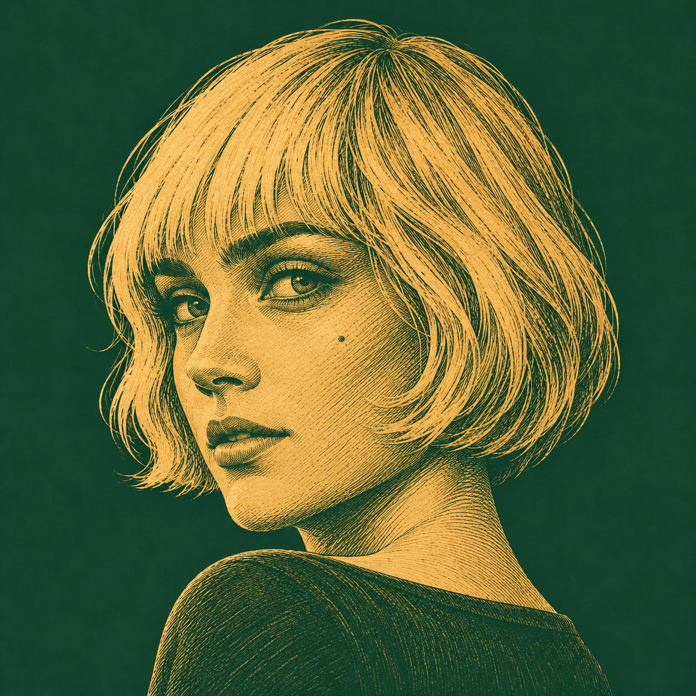
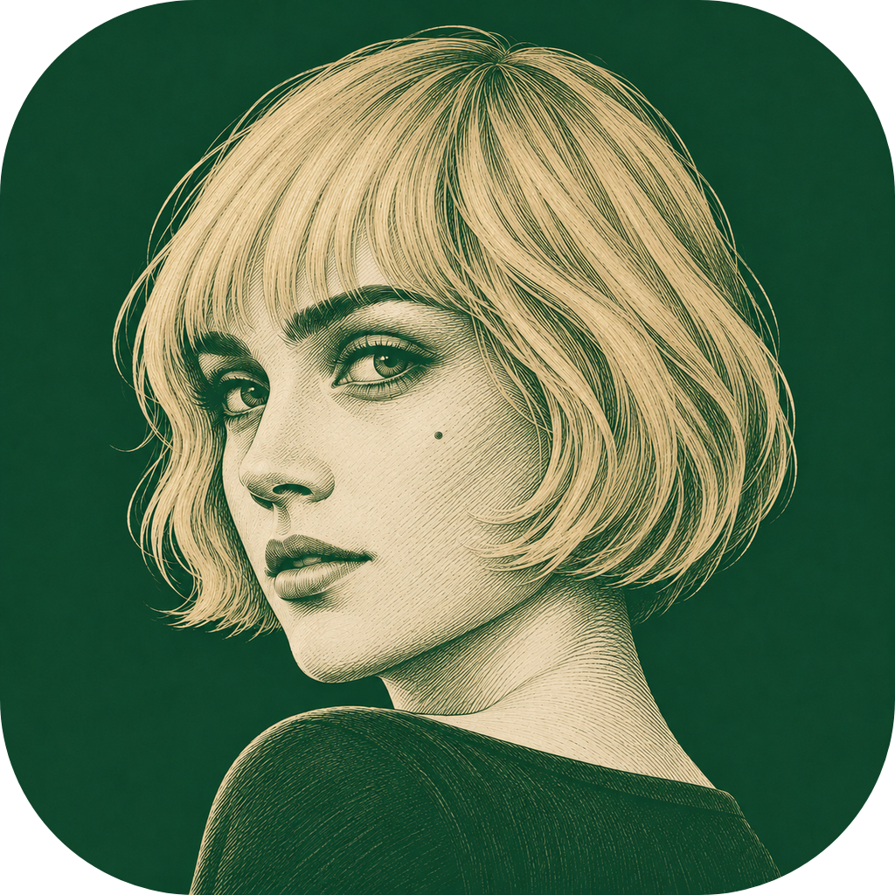
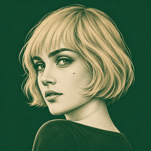

JOI / APPROVED FINAL PORTRAIT
柔化黄色，保留刻线。
G3 肩侧回眸 · 最终版已确认并应用
选定原版 · 金色偏浓


原始金色肤色与发色，同一肩侧回眸构图。
微调版 · 象牙肤色 / 香槟金发

降低黄橙色饱和度，疏朗面部刻线，保留深绿版画质感。


同一面向、同一回眸姿势
使用已替换的实际图标与头像资源
G3 肩侧回眸 · 最终版已确认并应用

原始金色肤色与发色，同一肩侧回眸构图。
降低黄橙色饱和度，疏朗面部刻线，保留深绿版画质感。


同一面向、同一回眸姿势
使用已替换的实际图标与头像资源